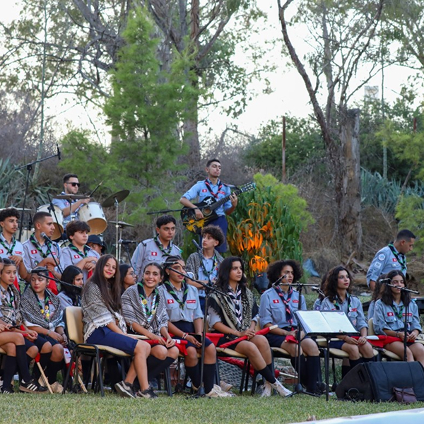
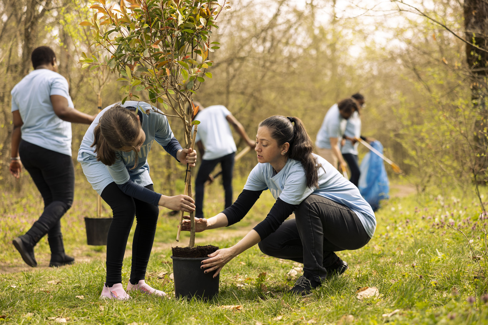

Ouvert: 9h00 - 17h00
+216 71897716


Devenez bénévole et participez activement à la protection des animaux et à la sensibilisation environnementale en Tunisie.
Je deviens bénévoleRejoignez notre réseau de bénévoles passionnés et aidez-nous à transformer des vies — une patte à la fois. Aucune expérience requise, juste un peu d'amour.

Contribuez directement à la protection et au bien-être des animaux.
Apprenez aux côtés de professionnels passionnés.
Intégrez une équipe engagée et solidaire.
Aidez les soigneurs dans la préparation des repas et l'entretien.
Informez les visiteurs sur la biodiversité tunisienne.
Participez à l'entretien du parc du Belvédère.
Je n'avais aucune expérience avant de rejoindre le Zoo du Belvédère. En quelques semaines de bénévolat, j'ai découvert un monde fascinant et une équipe incroyable. Donner de son temps ici, c'est recevoir tellement plus en retour.


Inscription
Entretien
Formation
Action
Rejoignez notre communauté de bénévoles ou faites un don pour soutenir nos actions sur le terrain.
Une aventure extraordinaire au cœur de la nature sauvage. Depuis 1985, nous nous engageons pour la conservation des espèces et l'éducation environnementale.
Allée de la Kobba, Tunis
Ouvert toute l'année
Nos animaux
Nos hôtels
Nos espaces